RiverCast from the bank. Small fish all day, bigger ones at dusk.
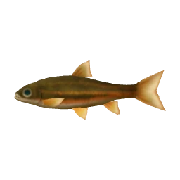
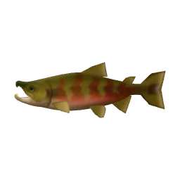
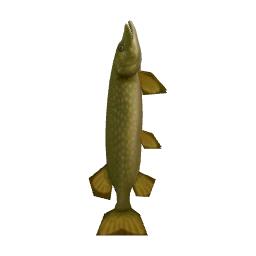
kinds
Mountain pondStill water up the mountain. Opens when the mountain does.
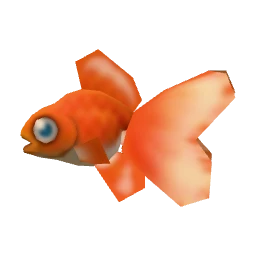
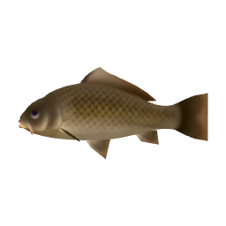
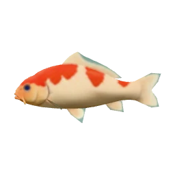
kinds
SeaOff the pier and the beach. Crabs and shells on the sea floor.
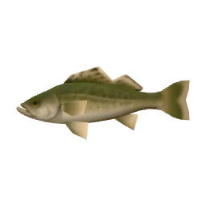
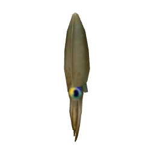
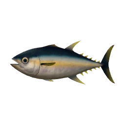
kinds, sea floor too
Deep seaOut past the buoys, by boat. Big fish, long fights.
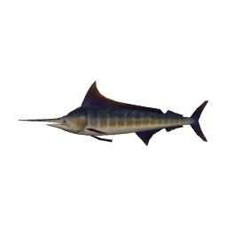
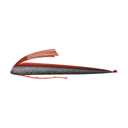
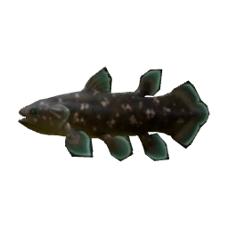
new: from the boat